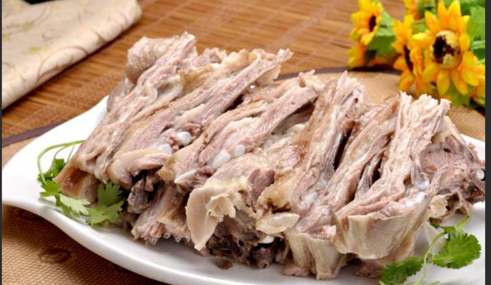
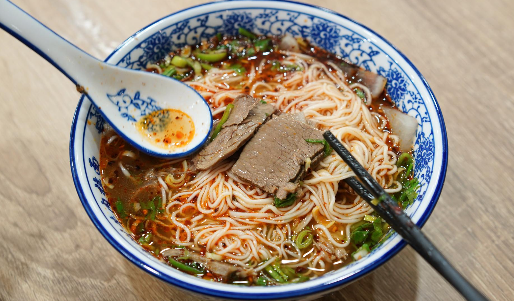
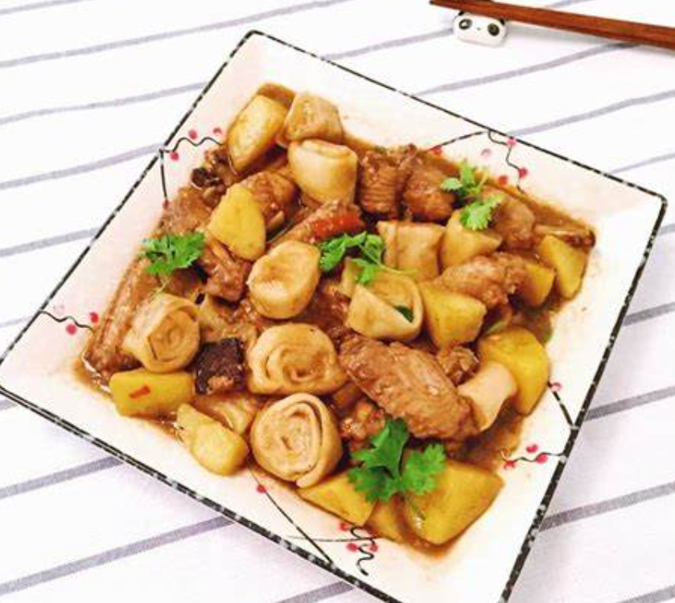
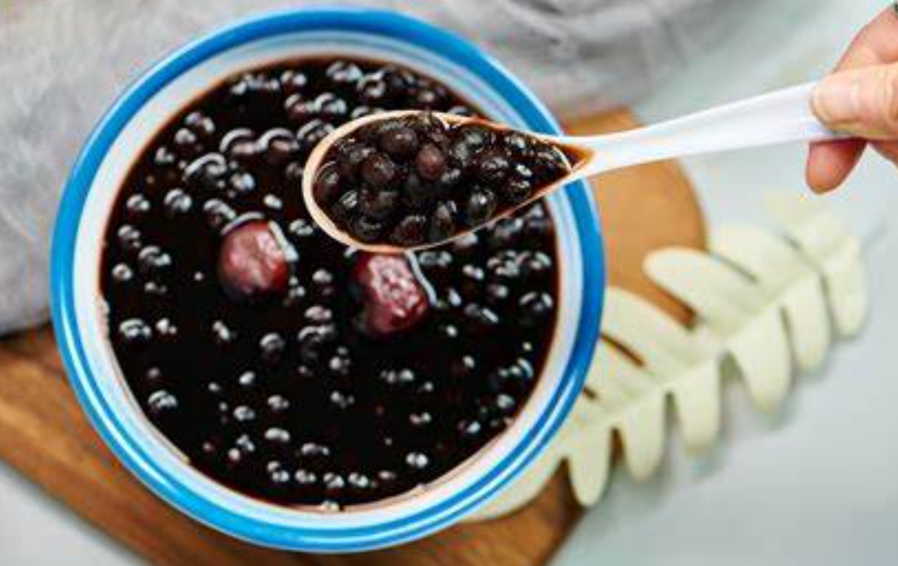
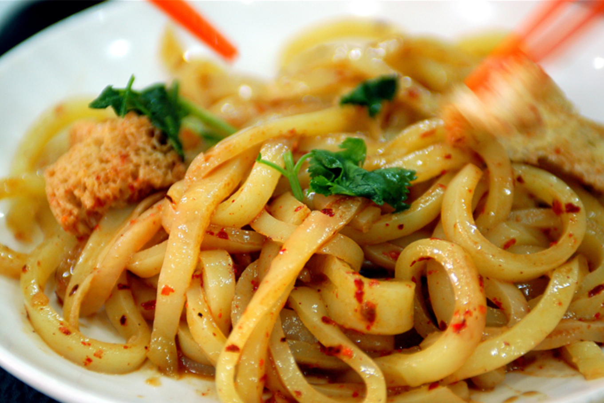

张掖美食概览
张掖美食融合了西北风味和少数民族特色，以面食、牛羊肉为主，口味偏重， 独具地方特色。这里既有传统的小吃，也有独具特色的宴席，让您大饱口福。

特色面食
张掖面食种类繁多，制作精细，口感独特，是张掖饮食文化的重要组成部分。

牛羊肉美食
张掖牛羊肉肉质鲜嫩，营养丰富，是当地居民餐桌上的常客。
风味小吃
张掖小吃种类丰富，口味独特，是了解张掖饮食文化的最佳窗口。
特色面食

牛肉小饭
牛肉小饭是张掖最具代表性的早餐之一，它并非米饭，而是将面切成小丁， 配以牛肉汤和牛肉片，再加上葱花、香菜等调料，口感筋道，味道鲜美。
推荐店铺：孙记牛肉小饭、周记牛肉小饭
搓鱼面
搓鱼面是张掖地区特有的面食，因面条两头尖，中间粗，形似小鱼而得名。 它是手工搓制而成，口感爽滑，配以各种臊子食用，风味独特。
推荐店铺：老李家搓鱼面、搓鱼世家

炒炮
炒炮是张掖的特色面食，因面条形似炮仗而得名。它是将面切成小条， 煮熟后配以豆芽、小白菜等蔬菜炒制而成，口感劲道，麻辣鲜香。
推荐店铺：小辣椒炒炮、老字号炒炮

牛肉拉面
张掖的牛肉拉面独具特色，面条粗细均匀，口感筋道，牛肉汤清澈鲜香， 配以辣椒油和香菜，味道十分诱人。
推荐店铺：马子禄牛肉面、金强牛肉面
牛羊肉美食
手抓羊肉
手抓羊肉是张掖地区的传统名菜，选用当地优质羊肉，配以花椒、八角等调料煮熟， 肉质鲜嫩，不膻不腻，蘸上韭菜花酱或辣椒油，味道更佳。
推荐店铺：裕固风情园、草原手抓

牛肉垫卷子
牛肉垫卷子是张掖地区的特色美食，将牛肉炖煮至熟烂，再将擀好的面卷铺在牛肉上， 一同焖煮至面卷入味，牛肉香烂，面卷子筋道，风味独特。
推荐店铺：老妈牛肉垫卷子、老张牛肉馆
风味小吃

灰香豆
灰香豆是张掖地区的传统甜点，由黑豆、红枣等原料熬制而成，色泽棕红，香甜可口， 具有浓郁的豆香和枣香，是夏季消暑的佳品。
推荐店铺：老字号灰香豆、甜水井灰香豆

酿皮
酿皮是张掖地区的传统小吃，以面粉为原料，经发酵、蒸制而成，口感筋道， 配以辣椒油、香醋、蒜末等调料，味道酸辣可口，是夏季消暑的佳品。
推荐店铺：老字号酿皮、王记酿皮